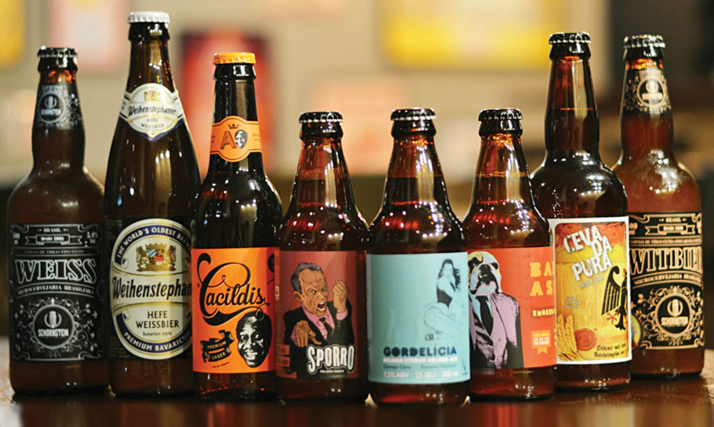
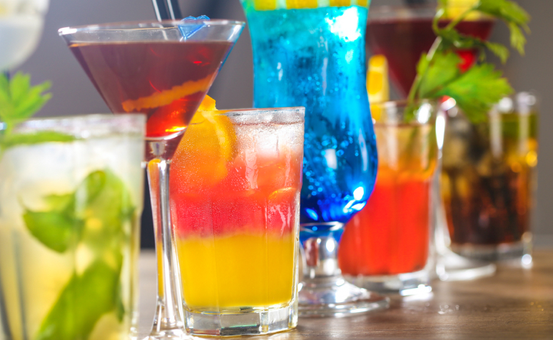
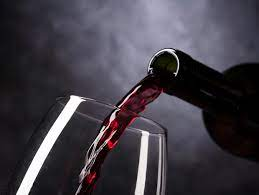

Bebidas
Cervejas Artesanais
As cervejas artesanais são uma verdadeira paixão para os amantes da boa cerveja. Elas são produzidas em pequenas quantidades, com métodos tradicionais e ingredientes selecionados, resultando em sabores únicos e experiências sensoriais incríveis. Nossa churrascaria oferece uma seleção cuidadosamente escolhida de cervejas artesanais, com uma variedade de estilos que vão desde as refrescantes e leves até as mais encorpadas e intensas. Cada cerveja artesanal é uma verdadeira obra de arte, trazendo aromas, cores e sabores que surpreendem e encantam os paladares mais exigentes.
| Opção (qualquer sabor) | Preço |
|---|---|
| 600ml | R$ 50,00 |
| 1L | R$ 25,00 |
Drinks
Nossos drinks são criados com maestria pelos nossos talentosos bartenders, trazendo combinações harmoniosas de ingredientes frescos e destilados de qualidade. Cada drink é cuidadosamente preparado para proporcionar uma experiência única, com equilíbrio de sabores e uma apresentação impecável. Dos clássicos aos autorais, nossos drinks são verdadeiras obras de arte líquidas, perfeitas para serem apreciadas antes, durante ou depois do seu churrasco. Desfrute de um momento especial saboreando um dos nossos deliciosos drinks feitos sob medida para você.
| Opção | Preço |
|---|---|
| Caipirinha de Frutas Vermelhas | R$ 15,00 |
| Mojito | R$ 18,00 |
| Margarita | R$ 16,00 |
| Piña Colada | R$ 17,00 |
vinhos
Nossa carta de vinhos apresenta uma seleção diversificada de rótulos que complementam perfeitamente o sabor das carnes suculentas e dos pratos da nossa churrascaria. Dos vinhos tintos encorpados aos brancos frescos e aromáticos, temos opções para agradar a todos os paladares. Cada vinho foi escolhido com cuidado, levando em consideração sua qualidade, procedência e harmonização com os sabores intensos e marcantes dos nossos pratos. Desfrute de uma taça de vinho cuidadosamente selecionada e descubra como ela eleva sua experiência gastronômica a um novo patamar.
| Opção | Preço |
|---|---|
| Vinho Tinto Reserva | R$ 80,00 |
| Vinho Branco Chardonnay | R$ 60,00 |
| Vinho Rosé Seco | R$ 45,00 |
| Vinho Espumante Brut | R$ 70,00 |